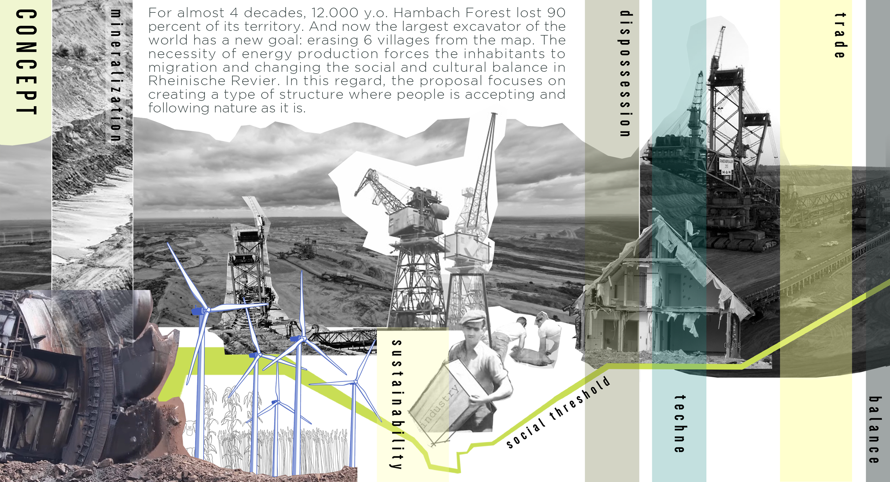
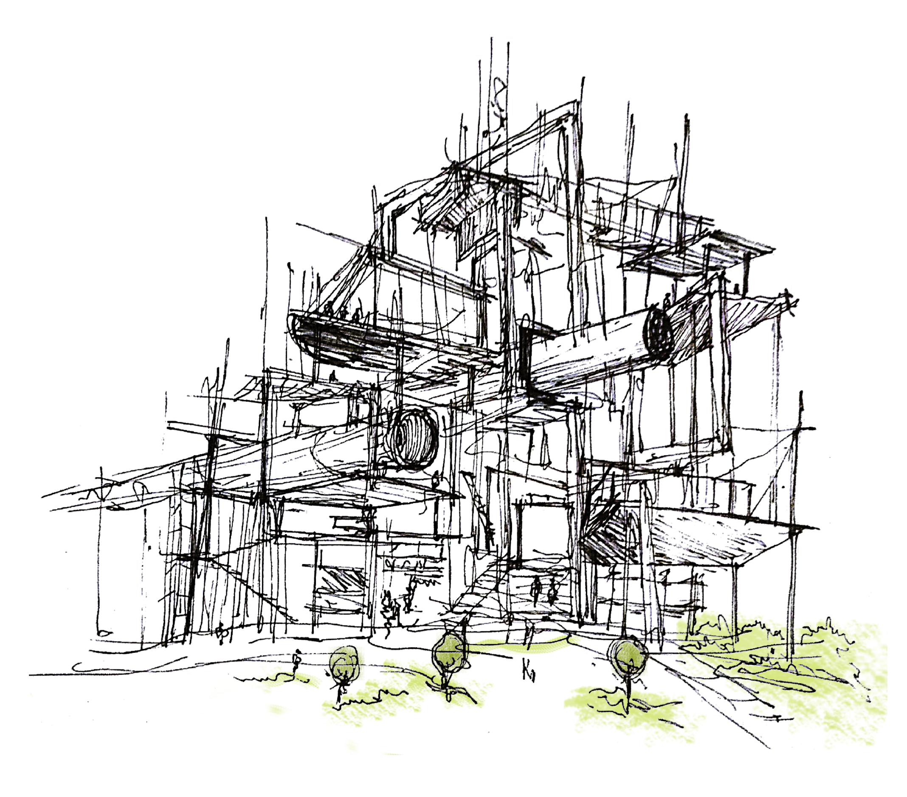
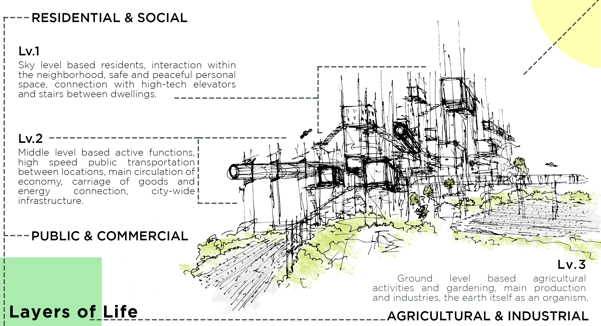
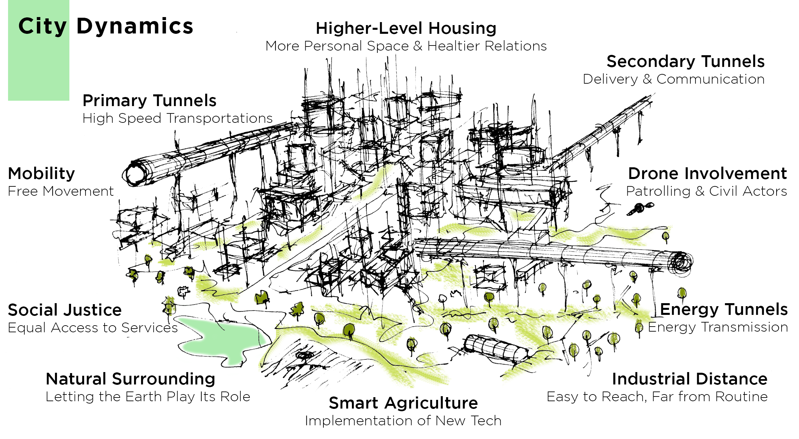
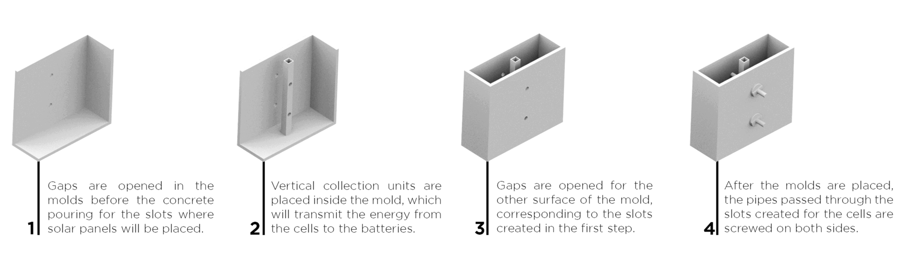
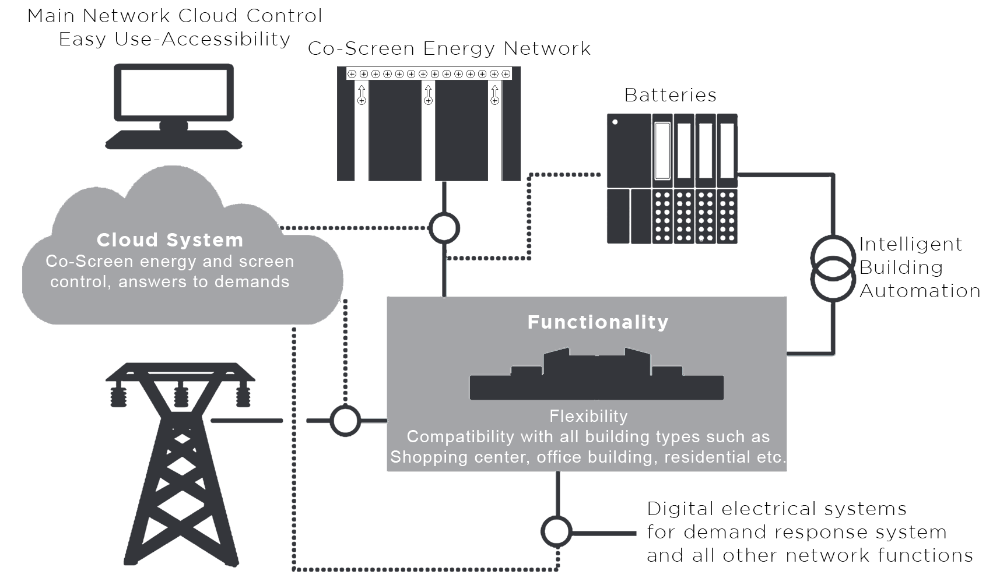
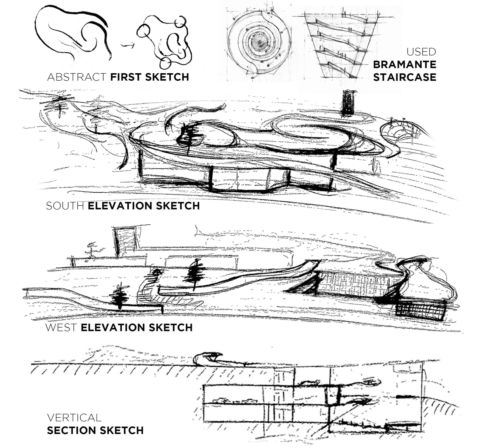
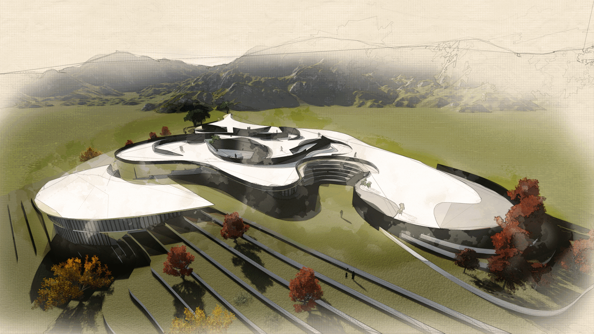

The New Normal, Hambach-Rhein River/DE
Shortlisted, Ideenwettbewerb 2021 "Zukunftsszenarien Rheinisches Revier"

For almost 4 decades, 12.000 y.o. Hambach Forest lost 90 percent of its territory. And now the largest excavator of the world has a new goal: erasing 6 villages from the map. The necessity of energy production forces the inhabitants to migration and changing the social and cultural balance in Rheinische Revier. In this regard, the proposal focuses on creating a type of structure where people is accepting and following nature as it is.
 

CoScreen, Istanbul/TR
Finalist (Top10), Sabanci Holding Concrete Ideas Competition

Principles of Workflow
The basis of the idea lies in the modular creation of solar cells that have become part of the structure, and the retention of rays coming from not only a point but from all sides of the structure and from every possible angle that can fall on it.
With solar cell efficiency exceeding 50% today, the project does not only produce the energy of the building, but also enables the storage of this energy. It creates an analysis of building needs with Cloud technology and distributes energy into the building in a controlled panel.

Production Process

Cloud Technology

Dadybra Auditorium, Karabuk/TR
Jury Special Reward, MimED2018 National Student Competition
The project is located in the central district of Karabuk, serving as a transition hub between the city center, New City neighborhood, and the bus station. The aim was to transform an idle land into a more social and functional area. The design integrates topographic features with a linear, open, and semi-open layout, creating a dynamic space.

The project includes various functional areas such as an auditorium, administrative units, a restaurant, technical units, and backstage facilities. Secondary masses house educational units accessible via ramps, featuring workshops, meeting rooms, and changing rooms. The foyer and exhibition units are arranged as semi-open and closed areas. Additionally, the open spaces feature a street theater, graffiti walls, a skateboard area, cruise areas with three monumental trees, a concert area, an amphitheater, and open exhibition areas.

The design considers topography, lighting, prevailing winds, and user density to enhance the flow of young people from the central street to the New City line. The project aims to integrate the square with the city, supported by fluid mass lines and successive lines on the master plan. The facades feature open and semi-open slits, creating a transition structure that supports user freedom and interaction.
